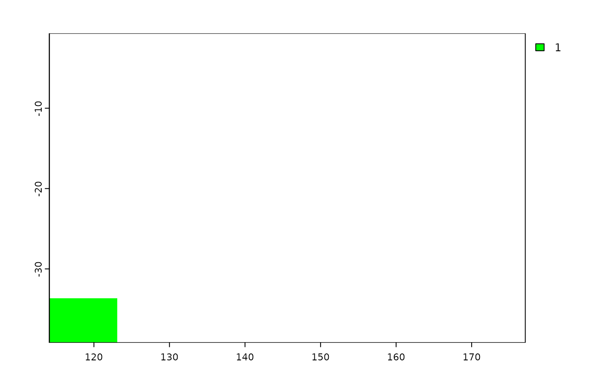
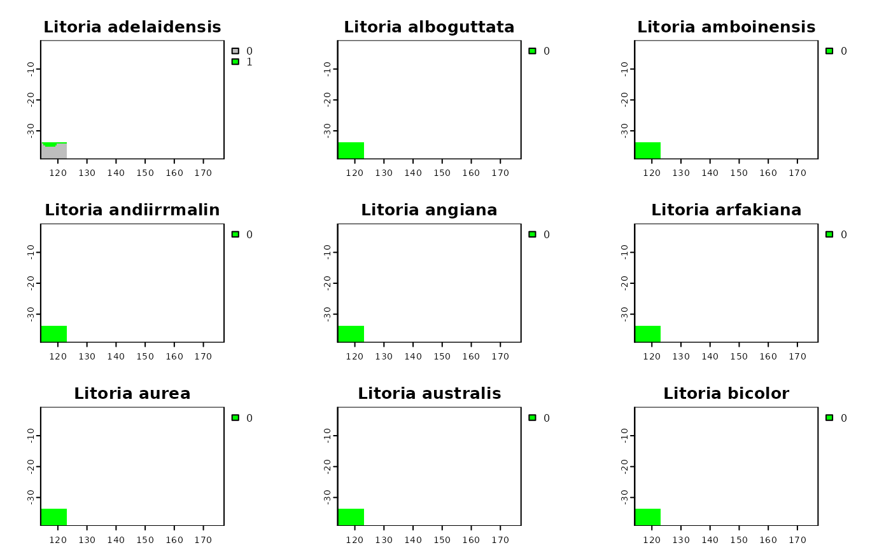
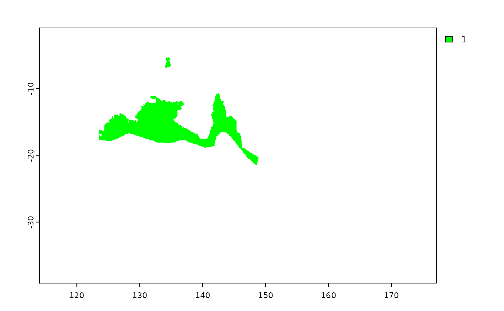

The function will rasterize the shapefile using the parameters of y, a SpatRaster. When the argument y is provided, the resolution parameter is ignored. When the argument ymask is TRUE, y is used as a mask for x.
Usage
shp2rast(
x,
y = NULL,
sps.col,
ymask = FALSE,
background = NA,
touches = TRUE,
resolution,
values = 1,
filename = NULL,
...
)Arguments
- x
SpatVector or a two-column matrix (point coordinates)
- y
SpatRaster
- sps.col
character. It should be a variable name in x.
- ymask
logical. If TRUE, y will be used as a mask for x.
- background
numeric. Value to put in the cells that are not covered by any of the features of
x. Default isNA- touches
logical. If
TRUE, all cells touched by lines or polygons are affected, not just those on the line render path, or whose center point is within the polygon. Iftouches=TRUE,addcannot beTRUE- resolution
numeric vector of length 1 or 2 to set the spatial resolution (see
res). If this argument is used, argumentsncolsandnrowsare ignored- values
typically a numeric vector of length
1ornrow(x). If the length is belownrow(x)the values will be recycled tonrow(x). Only used whenxis a matrix. Can also be a matrix or data.frame- filename
character. Output filename
- ...
additional arguments passed to
fun
Examples
# \donttest{
library(terra)
shp <- terra::vect(system.file("extdata", "shps_iucn_spps_rosauer.shp",
package="phyloraster"))
# create a polygon to use as mask with an extent
e <- terra::ext(113, 123, -43.64, -33.90)
p <- terra::as.polygons(e, crs="")
coun.crop <- terra::crop(p, terra::ext(shp))
coun.rast <- terra::rasterize(coun.crop,
terra::rast(terra::ext(shp), resolution = 0.5))
plot(coun.rast, col = "green")

# rasterizing with the mask of the polygon
shp.t <- shp2rast(shp, y = coun.rast, sps.col = "BINOMIAL",
ymask = TRUE, background = 0)
plot(shp.t, col = c("grey", "green"))

# rasterizing without using mask
shp.t2 <- shp2rast(shp, sps.col = "BINOMIAL", ymask = FALSE,
background = NA, resolution = 0.1)
plot(shp.t2[[9]], col = c("grey", "green"))

# }